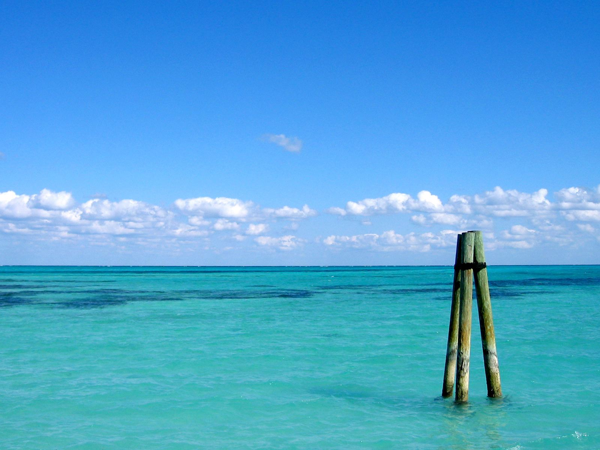

Bienvenidos a Ocumare


Sus blancas arenas y sus aguas cristalinas hacen de esta playa uno de los lugares mas codiciados por los aventureros. Para llegar a Cepe debe llegar al Malecón de Choroní, de allí se debe tomar una lancha destino a Cepe. En Cepe encontrará todas las comodidades, alquiler de toldos, comidas, posadas center y un buen servicio.

Hermosa playa de blancas arenas, se accede a ella desde el Balneario de Cata por vía marítima, o por vía peatonal.Catica es una bahía formada por rocas y montañas que se encuentra ubicada al noreste de bahíacenter de cata, casi no existe la presencia de olas.